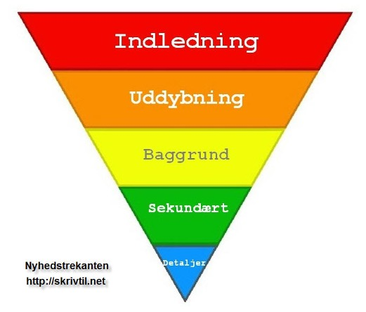
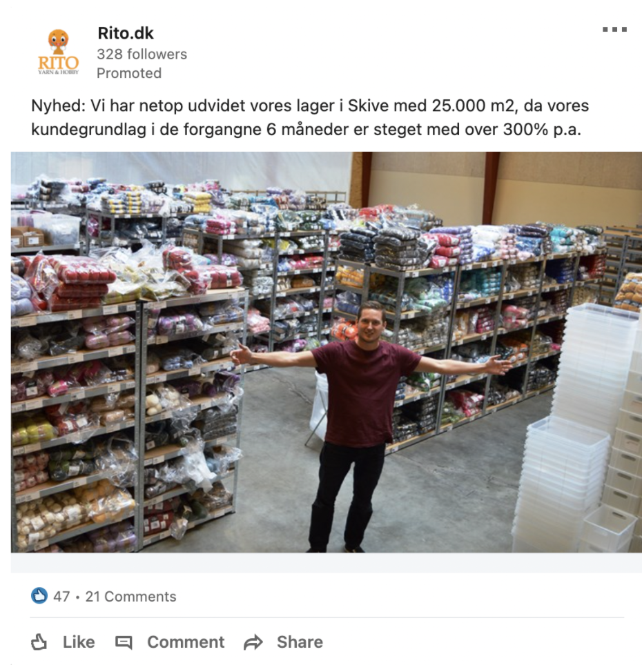
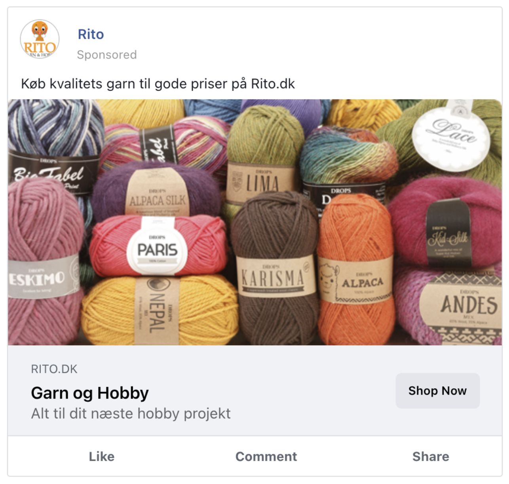
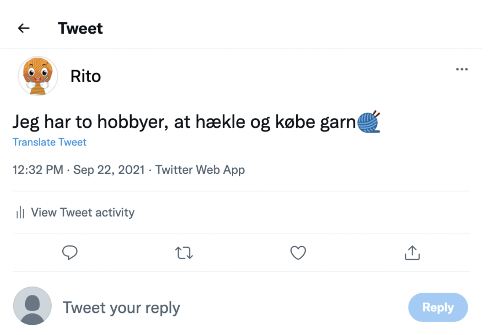

I Tekstproduktion har vi arbejdet med forskellige former for tekster og hvordan man skriver i forskellige genre. Vi har arbejdet med forskellige medietyper, genre og content. Når man arbejder med multimediedesign er Content King, da det er det der skaber værdi for ens kunder.
Nyhedskriterierne er forskellige måder hvorpå en nyhed kan se ud. Hvis man bruger Nyhedskriterierne, når man skaber indhold, får man 3 ting ud af det.
De fem Nyhedskriterier ser således ud:
Væsentlighed - Noget der har grundlæggende betydning eller konsekvens for mange mennesker. Ex: "Mundbind skal igen bruges når man er ude og handle"
Aktualitet - Noget der er oppe i tiden. Kan udspringe fra stof der i forvejen cirkulerer i andre medier. De fleste nyheder falder i dette kriterie. Ex: "Sygeplejesker forsætter protest"
Identifikation - Noget læseren kan genkende sig selv i. Ex: "8 ud af 10 danskere sover for lidt"
Sensation - Noget der fascinere eller chokere. Ofte små, skæve historier. Ex: "Hund reder kat ned fra træ"
Konflikt - Kollisionskurs. Ex: "Tidligere patient: "Ingen passede mig"
Der findes forskellige måder hvorpå folk læser, deres proces til forståelse kan deles op i forskellige dele
Tekster til web skal være genkendelige, selvforklarende og indlysende, man skal helst ikke skulle tænke når man læser den.
Informationsproces gennem en artikel. Den viser hvordan at det vigtigste altid skal stå først, altså brug allerede hovedbudskabet/konklusionen frem i din overskrift og uddyb derefter ned baggrund og detaljer.
Vi har i undervisningen arbejdet med at udarbejde tekster til forskellige SoMe kanaler. Vi blev givet en virksomhed vi skulle udarbejde en kampagne til fordelt over fire SoMe platforme, Facebook, Linkedin, Twitter samt skulle vi lave en nyhedsmail. Fokus i opgave var tekstproduktionen. I grupper arbjede vi med at udarbejde disse tekster og skulle sidst på dagen fremlægge vores forslag til en kampagne. Min gruppe arbejde med virksomheden Rito.dk. Inden vi begyndte arbejdet tænkte vi blandt andet i målgrupper og i hvad vi gerne ville frem til med vores SoMe opslag.
Nyhedsbrevet udarbejdede vi med det mål for øje, at vi ville holde den i stil med deres egen hjemmeside. Vi blev enige om i gruppen at mailen skulle indeholde nogle gode tilbud, som skulle give kunden lyst til at klikke ind på hjemmesiden og kigge videre. For at skabe en god nyhedsmail er der forskellige ting man kan gøre for at skabe opmærksomhed.
Linkedin udarbejdede vi ud fra ideen om at rito.dk var en virksomhed i udvikling, så opslaget skulle være en form for opdatering på hvordan det går i virksomheden. Da mennesket er læser det visuelle først, ville vi finde et billede der skulle illustrere udviddelsen af ritos lager. Vi kunne også i vores opslag have inkluderet hashtags, der ville kunne have skabt mere trafik på opslaget. Vores opslag endte med at se sålede ud:
Facebook her udarbejdede vi et simpelt reklame opslag, som kort og godt skulle gøre reklamere for nogle af deres produkter.
Twitter opslaget er udarbejdet efter ideen om at men på denne kanal ville kunne følge rito.dk og få inspriation til projekter, samt kunne man på siden dele små sjove citater. Ideen med de små sjove citater, handler om at skabe noget genkendelighed og sammenhold blandt de forskellige kreative mennesker som handler på rito.dk.
